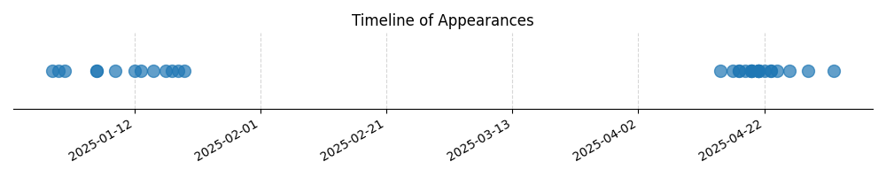

Kategorie: Principy letu
Aerodynamické zkroucení křídla (aerodynamic twist) znamená, že úhel náběhu profilu křídla se směrem ke konci křídla snižuje. To znamená, že koncové profily dosahují kritického úhlu náběhu při vyšší rychlosti (tedy později) než profily u kořene křídla. Toto uspořádání pomáhá předcházet odtržení proudu od povrchu křídla na koncích, protože k odtržení proudu dochází obvykle nejdříve u profilů s vyšším úhlem náběhu.

| Datum výskytu |
|---|
| 2025-05-03 |
| 2025-04-29 |
| 2025-04-26 |
| 2025-04-24 |
| 2025-04-23 |
| 2025-04-23 |
| 2025-04-22 |
| 2025-04-21 |
| 2025-04-21 |
| 2025-04-21 |
| 2025-04-21 |
| 2025-04-21 |
| 2025-04-20 |
| 2025-04-20 |
| 2025-04-20 |
| 2025-04-20 |
| 2025-04-19 |
| 2025-04-18 |
| 2025-04-18 |
| 2025-04-17 |
| 2025-04-15 |
| 2025-01-20 |
| 2025-01-19 |
| 2025-01-18 |
| 2025-01-17 |
| 2025-01-15 |
| 2025-01-13 |
| 2025-01-12 |
| 2025-01-09 |
| 2025-01-06 |
| 2025-01-06 |
| 2025-01-01 |
| 2024-12-31 |
| 2024-12-30 |